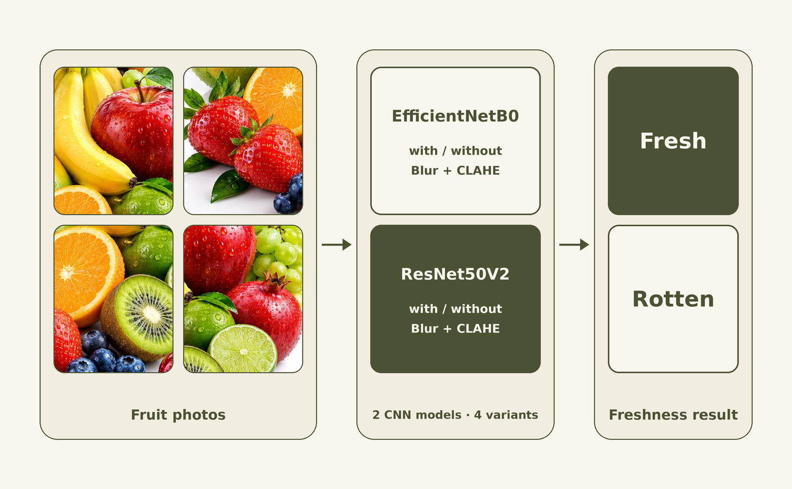

AI/ML, Computer Vision, Team project
Fruit Freshness Classification
A computer vision project that classifies fruit photos as fresh or rotten, for many fruit types in one model. EfficientNetB0 and ResNet50V2 are each trained with and without Gaussian Blur + CLAHE preprocessing, and the four variants are compared on the same 36-image test set.

The problem
Rotten fruit that is not caught early can spoil the produce around it, which costs money and can put buyers at risk.
Manual checks are slow
- Quality inspection is still done by people, so it is slow, inconsistent, and subjective
- Fatigue and changing light make the judgement drift
Lighting gets in the way
- Uneven lighting can hide small dark spots and early mould
- This is why we tested contrast enhancement before the CNN
The approach
- Binary classification: fresh vs rotten, for many fruit types at once
- Transfer learning with two pre-trained CNNs
- An ablation: the same setup with and without preprocessing
Results at a glance
The evaluation figures from the experiments: the metric comparison first, then the confusion matrices, the preprocessing example, and the training curves. Click any figure to see it full size.
Metric comparison
The four variants on the same 36 test images, with a quick guide to the numbers.
How to read the numbers
- Accuracy: the share of the 36 test photos classified correctly
- F1: balances precision and recall, averaged over fresh and rotten
- Per-class recall: how many fresh and how many rotten photos each model got right
Confusion matrices
Rows are the true class and columns are the prediction, so the top-right cell counts fresh fruit called rotten and the bottom-left counts rotten fruit called fresh.
Preprocessing example
The same four fruit photos after Gaussian Blur + CLAHE and with resizing and normalisation only.
Training curves
Accuracy and loss on the training and validation sets, for head training and then fine-tuning.
Data
One public Kaggle dataset of fruit photos, almost evenly split between fresh and rotten, covering fruits such as strawberry, apple, banana, kiwi, mango, grape, cherry, pear, peach, and orange.
| Set | Fresh | Rotten | Total |
|---|---|---|---|
| Train (80%) | 145 | 142 | 287 |
| Validation (10%) | 18 | 18 | 36 |
| Test (10%) | 18 | 18 | 36 |
| Total | 181 | 178 | 359 |
Source: “Fruits Quality: Fresh vs Rotten” by Nour Abdoun on Kaggle.
Preparing the data
- The original train, validation, and test folders were merged, then split again, stratified 80/10/10
- The split is saved to one file, so every variant is trained and tested on identical images
- Balanced class weights are used during training
Augmentation
- Head training: strong (rotation up to 40°, flips, zoom 0.3, shear, brightness, channel shift)
- Fine-tuning: light (rotation 15°, horizontal flip, zoom 0.1, small brightness change)
- Augmentation runs on the raw image first, then enhancement and normalisation
How it works
The same pipeline is run four times: two architectures, each with and without the enhancement step.
Resize
Every photo becomes 224 × 224 and is split 80/10/10.
Enhance
Gaussian Blur (3×3), then CLAHE on the L channel of LAB. Skipped in the baseline.
Normalise
Each architecture’s own function: [0, 255] for EfficientNet, [−1, 1] for ResNet.
Train
Two phases: frozen backbone first, then the top layers fine-tuned.
Evaluate
Test-time augmentation over 7 passes, averaging the predicted probabilities.
The two models
- EfficientNetB0: about 5.3M parameters in its standard ImageNet version, simple head (5,122 trainable parameters: pooling, batch norm, dropout, softmax), top 20 layers unfrozen
- ResNet50V2: about 25.6M parameters in its standard ImageNet version, deeper head (1,185,026 trainable parameters: 512 → 256 with dropout and L2), top 50 layers unfrozen
Training setup
- Adam, label smoothing 0.1, batch size 16
- Head: up to 30 epochs at 1e-3. Fine-tuning: up to 25 epochs at 5e-5
- Early stopping on validation accuracy, learning-rate reduction on plateau, same seed for all four runs
Results
All four variants were tested on the same 36 images (18 fresh, 18 rotten), with test-time augmentation.
| Variant | Accuracy | F1 | Fresh correct | Rotten correct |
|---|---|---|---|---|
| ResNet50V2 + preprocessing | 94.44% (34/36) | 0.9443 | 18 / 18 | 16 / 18 |
| ResNet50V2 | 91.67% (33/36) | 0.9161 | 18 / 18 | 15 / 18 |
| EfficientNetB0 + preprocessing | 88.89% (32/36) | 0.8889 | 16 / 18 | 16 / 18 |
| EfficientNetB0 | 86.11% (31/36) | 0.8610 | 16 / 18 | 15 / 18 |
F1 is a weighted average over both classes. Weighted recall equals accuracy, so recall is shown per class instead.
Reading the numbers
- Preprocessing added one correct image for each architecture, about +2.8 points of F1
- ResNet50V2 was ahead of EfficientNetB0 by two images in both settings
- The direction is consistent, but with 36 test images one photo is worth 2.8 points, so these gaps are not proof
Where it fails
- Most mistakes are a rotten fruit predicted as fresh: 10 of the 14 errors across the four variants (one variant ties at 2 and 2)
- Our likely explanation: partly spoiled fruits where most of the surface still looks fine. We have not yet inspected the misclassified photos one by one
- For quality control this is the costly mistake, so it matters more than overall accuracy
Limits and next steps
Limitations
- The test set has only 36 images, so even the best accuracy could plausibly sit anywhere from about 82% to 98%
- The folders were merged and split again per image, and we have not checked for duplicate or near-identical photos across train and test
- Rotten fruit often appears on grass or wood and fresh fruit on white, so the model may partly learn the background. No Grad-CAM check yet
- The two architectures differ in head size and unfrozen layers, so the comparison is not a clean test of the architectures alone. The 3×3 blur at σ = 0.5 is very mild, so most of the preprocessing effect likely comes from CLAHE, which we did not test separately
Next steps
- Repeated stratified k-fold cross-validation, reporting mean ± standard deviation
- Remove duplicate photos (perceptual hashing) before splitting
- Grad-CAM to see whether the model looks at the fruit or the background
- Test blur and CLAHE separately, and give both models the same head
- More data, MobileNetV3 and Vision Transformer, then a real-time or mobile demo
My contribution
A team project for the Computer Vision course at BINUS University, built by three people (Group 5). I trained and evaluated the model variants and worked on the report, and like the rest of the team I also helped with the dataset, the preprocessing, and the demo video.
What I did
- Training and evaluating the four model variants
- Writing parts of the final report: methodology, results, and discussion
Done together
- Choosing the topic and the dataset, and planning the experiments
- Dataset preparation and image preprocessing
- Analysing the results, the demo video, and documenting the GitHub repository